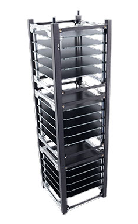
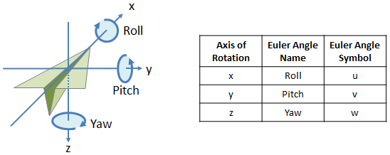

31 Нелинейная оптимизация. Последние минуты жизни
7 марта 2024 года, в полдень наблюдатель, находящийся недалеко от города Кигома (озеро Танганьика), Танзания настраивал свой солнечный телескоп Coronado SolarMax III 90. Он был удивлён, что на протяжении 5 секунд яркость солнца изменялась по закону Глава 31.12. В это время в верхних слоях атмосферы, отправляя последние пакеты телеметрии, сгорал BSUSAT-1 Глава 31.8, который и заинтересовал астронома. Вдруг на мгновение всё вокруг залил ярчайший поток света. Определите, что озарило сознание любителя астрономии: сгоревший спутник или шаманская настойка, выпитая с утра.
31.1 Задание
Физика процесса рассматривается начиная с пункта Глава 31.2, справочные данные приводятся в Глава 31.10
- Построить контурный график целевой функции (ошибки оценки параметров). Из него оценить начальное приближение для оценки скорости вращения спутника
- Если спутник вращается быстро, то выбрать модель вращающегося тела Глава 31.4.1, иначе модель невращающегося тела Глава 31.4.2
- Построить графики массы, скорости и светимости от времени
- Определить максимальную яркость спутника, его звёздную величину, соотнести с известными звёздами, видимыми невооруженным глазом Глава 31.13
Уведомление
Масса \(m(t)\), эффективная площадь поперечного сечения \(S_e(t)\) и другие физические величины определяются как функции от времени. А параметры окружающей среды зависят от высоты: температура \(T_a(h)\), плотность атмосферы \(\rho_a(h)\).
31.2 Пространственная модель
Спутник падает вертикально вниз с первой космической скоростью \(V_1\) и начинает взаимодействовать с атмосферой на высоте \(h_0\). Наблюдатель видит его на фоне солнца, находясь под ним.
31.3 Абляция
Спутник входит входит в атмосферу на первой космической скорости \(V_1\) и начинает взаимодействовать с её слоями на высоте \(h_0\). При входе в атмосферу будет сталкиваться с молекулами воздуха разогреваясь до температуры кипения металла. Основным фактором потери массы будет абляция — унос массы с поверхности твёрдого тела обтекающим эту поверхность потоком горячих газов.
31.4 Эффективная площадь взаимодействия
Чтобы определить количество молекул, с которыми столкнётся спутник надо знать его эффективную площадь взаимодействия \(S_e\) (площадь проекции). Для определения эффективной площади взаимодействия предлагаются следующие две модели
31.4.1 Модель вращающегося тела
Для быстро вращающегося тела среднюю площадь его проекции можно считать как 1/4 полной площади поверхности Глава 31.11. В этом случае оценкой коэффициента аэродинамической формы \(A=A_r\) принимается равным \(1.2\).
31.4.2 Модель невращающегося тела
В этом случае считаем, что спутник направлен своей большей гранью перпендикулярно потоку воздуха (направлению падения), и его коэффициент аэродинамической формы \(A=A_n\) принимается равным \(1.6\).
31.5 Баланс энергии и импульса
Температура спутника может быть рассчитана из закона сохранения энергии. Изменение температуры поверхности спутника \(dT\) за интервал времени \(dt\) можно вычислить из изменения энергии за тот же интервал \((dE)\) по формуле
\[ dT = \frac{dE}{c m} \]
где \(c\) — удельная теплоёмкость материала спутника, а \(m\) — его масса. Энергия передаётся спутнику за счёт столкновений с атмосферными атомами. В системе отсчёта спутника атмосфера имеет энергию
\[ m_a v^2 / 2 \]
где \(v\) — скорость спутника, а \(m_a\) — общая масса атмосферных атомов. Масса, встречаемая спутником за интервал времени \(dt\), равна
\[ \rho_a v S dt \]
где \(ρ_a\) – плотность атмосферы, \(A\) — коэффициент формы определённый, \(S_e\) — эффективная площадь поперечного сечения.
Энергия теряется спутником за счёт излучения. Нагретый спутник излучает равномерно всей площадью своей поверхности \(S_s\). Теряемая энергия выражается как
\[ 4\sigma \epsilon(T^4 − T_a^4) S_s \]
где \(T_a\) — температура атмосферы, \(\sigma\) — постоянная Стефана–Больцмана, а \(\epsilon\) — излучательная способность спутника, принимаемая равной 0.9.
Энергия также теряется через испарение материала. Энергия, необходимая для абляции массы \(dm\), по определению равна \(Ldm\), где \(L\) — теплота абляции, включающая теплоту плавления \(L_f\) и теплоту испарения \(L_b\) материала спутника. За счёт этого спутник теряет энергию \(Ldm/dt\). Таким образом, полное дифференциальное уравнение для температуры выглядит следующим образом:
\[ \frac{dT}{dt} = \frac{1}{cm} \left( \frac{\Lambda p_a v^3}{2} S_e - 4 \sigma \epsilon (T^4 - T_a^4) S_s - L \frac{dm}{dt} \right) \]
Скорость спутника, как правило, не изменяется существенно по его траектории, но уравнение импульса используется для отслеживания любых таких изменений. Безразмерный коэффициент \(\Lambda\) (коэффициент теплообмена) используется для описания доли кинетической энергии, пошедшей на нагрев спутника.
Импульс молекул воздуха, сталкивающихся с спутника за время \(dt\), равен
\[ \rho_a v^2 S dt \]
Чтобы описать долю импульса, фактически передаваемого спутнику используется безразмерный коэффициент \(Γ\), который близок к единице. Тогда уравнение для скорости выглядит следующим образом:
\[ \frac{dv}{dt} = \frac{\Gamma \rho_a v^2 S_e}{m} \]
31.6 Потеря массы
В условиях разреженной атмосферы для расчёта потери массы применяется аппроксимированное уравнение в условиях высокой температуры:
\[ \frac{dm}{dt} = S_e \cdot \psi \cdot \frac{P_a \exp \left( \frac{L \mu}{k_B T_B} \right) \exp \left( -\frac{L \mu}{k_B T} \right)}{\sqrt{\frac{2 \pi k_B T}{\mu}}} \]
где \(p_s\) — насыщенное давление паров, \(\mu\) — масса атома спутника, \(k_B\) — постоянная Больцмана, температуру кипения вещества спутника \(T_B\) при давлении на уровне моря \(P_a\) где \(p_v\) — парциальное давление паров вещества спутника, а \(\psi\) — коэффициент конденсации, который определяет вероятность того, что испарившийся атом спутника, столкнувшись с поверхностью, конденсируется. Для металлов \(\psi = 1\)
31.7 Яркость излучения
В этой модели используется классическое предположение, что световая интенсивность пропорциональна кинетической энергии, теряемой спутником пропорциональна скорости потери массы, поскольку скорость остаётся практически постоянной. Уравнение для световой интенсивности имеет вид:
\[ I = \tau \frac{dm}{dt} \frac{v^2}{2} \]
где \(\tau\) — безразмерный коэффициент светимости \(2\cdot 10^{-3}\) для , а интенсивность \(I\) выражается в Ваттах. Звёздная величина рассчитывается по формуле:
\[ M = 6.8 - 1.086 \ln{I} \]
31.8 Спутник
Считать, что спутник состоит целиком из алюминия. Спутник формата 3U представляет собой параллелепипед размером \(30\times 10\times 10\) см.

31.9 Модель атмосферы
Атмосфера рассматривается из барометрического подхода. Зависимость температуры в кельвинах от высоты \(h\) заданна следующим соотношением
\[ T_a(h)=T_0-\frac{\gamma-1}{\gamma}\frac{Mg}{R}h \]
\[ \rho_a(h)=\rho_0 \cdot {\biggl(\frac{T_a(h)}{T_0}\biggr)}^{1/0.26} \]
где \(M\) – молярная масса воздуха, \(\gamma\) – показатель адиабаты для воздуха
31.10 Константы
| Постоянная | Значение | Размерность | Описание |
|---|---|---|---|
| \(R\) | \(8.31\) | \(\mathrm{\frac{Дж}{К\cdot моль}}\) | универсальная газовая постоянная |
| \(M\) | \(28.97\) | \(\mathrm{\frac{г}{моль}}\) | молярная масса воздуха |
| \(g\) | \(9.8\) | \(\mathrm{\frac{м}{с^2}}\) | ускорение свободного падения |
| \(\gamma\) | \(7/5\) | показатель адиабаты для воздуха | |
| \(P_a\) | \(101.3\) | \(\mathrm{кПа}\) | давление атмосферы на уровне моря |
| \(\Lambda\) | \(0.6\) | безразмерный коэффициент теплообмена | |
| \(\tau\) | \(2\cdot 10^{-3}\) | коэффициент светимости | |
| \(\rho_0\) | \(1.20\) | \(\mathrm{\frac{кг}{м^3}}\) | плотность атмосферы на уровне моря |
| \(Γ\) | \(1\) | коэффициент передачи кинетической энергии частицами воздуха спутнику | |
| \(A_r\) | \(1.2\) | коэффициент аэродинамической формы | |
| \(A_n\) | \(1.6\) | коэффициент аэродинамической формы | |
| \(V_1\) | \(7.9\) | \(\mathrm{\frac{км}{с}}\) | первая космическая скорость |
| \(h_0\) | \(100\) | \(\mathrm{км}\) | высота входа спутника в атмосферу |
| \(\epsilon\) | \(0.9\) | излучательная способность спутника | |
| \(\sigma\) | \(5.67\cdot 10^{-8}\) | \(\mathrm{\frac{Вт}{м^2 К^4}}\) | постоянная Стефана-Больцмана |
| \(\psi\) | \(1\) | вероятность конденсации испарившегося атома | |
| \(\mathrm{a.е.м.}\) | \(1.66\cdot 10^{-27}\) | \(\mathrm{кг}\) | атомная единица массы |
| \(k_B\) | \(1.38 \cdot 10^{-23}\) | \(\mathrm{\frac{Дж}{К}}\) | постоянная Больцмана |
Характеристика алюминия
| Постоянная | Значение | Размерность | Описание |
|---|---|---|---|
| \(T_B\) | \(2470\) | \(\mathrm{^\circ C}\) | температура кипения |
| \(c\) | \(930\) | \(\mathrm{\frac{Дж}{кг \cdot К}}\) | теплоёмкость |
| \(L_f\) | \(390\) | \(\mathrm{\frac{кДж}{кг}}\) | удельная теплота плавления |
| \(L_b\) | \(10.53\) | \(\mathrm{\frac{МДж}{кг}}\) | удельная теплота кипения |
| \(\mu\) | \(27\) | \(\mathrm{a.е.м.}\) | масса атома |
31.11 Вращение тела в 3D
Для определения площади проекции вращающегося объемного тела в плоскости наблюдателя рассмотрим модель поворота тела относительно неподвижной системы координат. Произвольное тело рассматривается как набор его угловых точек в пространстве. В нашем случае поворот вокруг оси \(x\) задаётся углом \(\alpha\), вокруг \(y\) углом \(\beta\), а вокруг оси \(z\) углом \(\gamma\).

Опуская вывод приводится матрица оператора поворота точки на углы \((\alpha,\beta,\gamma)\)
\[ \mathrm{Rot}(\alpha,\beta,\gamma)=\begin{pmatrix} \cos (\beta ) \cos (\gamma ) & \sin (\alpha ) \sin (\beta ) \cos (\gamma )-\cos (\alpha ) \sin (\gamma ) & \cos (\alpha ) \sin (\beta ) \cos (\gamma )+\sin (\alpha ) \sin (\gamma ) \\ \cos (\beta ) \sin (\gamma ) & \sin (\alpha ) \sin (\beta ) \sin (\gamma )+\cos (\alpha ) \cos (\gamma ) & \cos (\alpha ) \sin (\beta ) \sin (\gamma )-\sin (\alpha ) \cos (\gamma ) \\ -\sin (\beta ) & \sin (\alpha ) \cos (\beta ) & \cos (\alpha ) \cos (\beta ) \\ \end{pmatrix} \]
Для получения проекции на плоскость \(xy\) используется тривиальная матрица оператора проекции
\[ \mathrm{Proj}=\begin{pmatrix} 1 & 0 & 0 \\ 0 & 1 & 0 \\ 0 & 0 & 0 \\\end{pmatrix} \]
Итоговая матрица оператора поворота и проекции получается как
\[ \begin{aligned} &\mathrm{P}(\alpha,\beta,\gamma)=\mathrm{Proj}.\mathrm{Rot}(\alpha,\beta,\gamma) = \\ &=\begin{pmatrix} \cos (\beta ) \cos (\gamma ) & \sin (\alpha ) \sin (\beta ) \cos (\gamma )-\cos (\alpha ) \sin (\gamma ) & \cos (\alpha ) \sin (\beta ) \cos (\gamma )+\sin (\alpha ) \sin (\gamma ) \\ \cos (\beta ) \sin (\gamma ) & \sin (\alpha ) \sin (\beta ) \sin (\gamma )+\cos (\alpha ) \cos (\gamma ) & \cos (\alpha ) \sin (\beta ) \sin (\gamma )-\sin (\alpha ) \cos (\gamma ) \\ 0 & 0 & 0 \\ \end{pmatrix} \end{aligned} \]
Проекция координат произвольной угловой точки тела \((x_0,y_0,z_0)\) после поворота определяется умножением вектора координат на матрицу поворота
\[ (x,y,0)=\mathrm{P}(\alpha,\beta,\gamma).(x_0,y_0,z_0) \]
Проделав так со всеми угловыми точками тела мы можем вычислить его площадь применив численный метод (вычисление площади замкнутой фигуры), как показано в анимации. Сверху указана площадь проекции.
31.12 Тень на солнце
На рисунке приведён график зависимости яркости солнца от времени на протяжении 5 секунд в условных единицах. Обычная яркость солнца составляет 1000 условных единиц.
31.13 Примечательные звёзды
| Звезда | Видимая звёздная величина |
|---|---|
| Солнце | \(-26.7\) |
| Сириус | \(-1.46\) |
| Вега | \(0.03\) |
| Антарес | \(1.0\) |
| Альфард | \(2.0\) |
| Альбирео | \(3.08\) |
| Алдульфин | \(4.03\) |
| Звезда Бесселя | \(5.21\) |
| Сихэ | \(6.04\) |
31.14 Численные методы
Площадь замкнутой фигуры в R можно найти с помощью функции pracma::polyarea()
Найти крайние точки области с помощью функции grDevices::chull()
xy <- matrix(runif(40), nrow=20, ncol = 2)
cv <- chull(xy)
plotly::plot_ly(x = xy[,1],
y = xy[,2],
type = 'scatter',
mode = 'markers') |>
plotly::add_trace(x = c(xy[cv,1], xy[cv[[1]],1]),
y = c(xy[cv,2], xy[cv[[1]],2]),
type = 'scatter',
mode = 'lines+markers') |>
pshow()Решить систему дифференциальных уравнений с помощью семейства функций pracma::ode45()